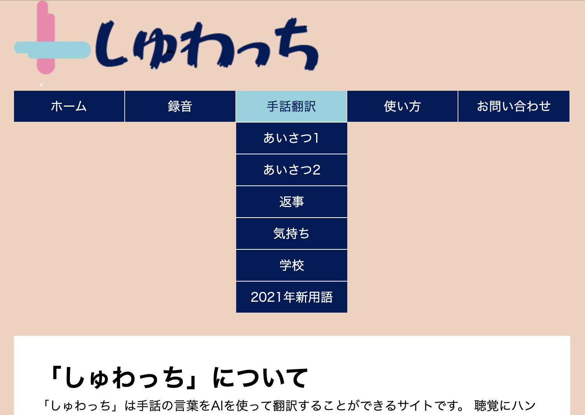

How to use sign language AI
How to use sign language AI
When you speak using sign language, AI recognizes the sign language and speaks.
Since the type of greeting you want to use is decided, please try using it after seeing how to use it.
Since the type of greeting you want to use is decided, please try using it after seeing how to use it.
1. First
From the tabs at the top of the site, select the type of sign language you want to use.
Currently, there are five types: "Greetings," "Greetings 2," "Replys," "Feelings," and "School."
The words that can be used are also written on each page, but please refer to the "Sign Language List" for how to use them.
Currently, there are five types: "Greetings," "Greetings 2," "Replys," "Feelings," and "School."
The words that can be used are also written on each page, but please refer to the "Sign Language List" for how to use them.

2. Start the camera
If you press the "Camera Start" button on the upper left and wait for a while, you will be prompted to use the camera.
Select "Allow". After a while, the camcorder will start up.
The words that can be used are also written on each page, but please refer to the "Sign Language List" for how to use them.
Select "Allow". After a while, the camcorder will start up.
The words that can be used are also written on each page, but please refer to the "Sign Language List" for how to use them.

3. Make sign language recognized
When you press the "Start Sign Language" button on the upper right, the number on the right side of the button will start the countdown.
Sign language when it reaches zero. It is easy to recognize each movement at 2 second intervals.
Sign language when it reaches zero. It is easy to recognize each movement at 2 second intervals.

4. Sign language is recognized and voice synthesis is performed.
When you press the "Start Sign Language" button on the upper right, the number on the right side of the button will start the countdown.
Sign language when it reaches zero. It is easy to recognize each movement at 2 second intervals.
Sign language when it reaches zero. It is easy to recognize each movement at 2 second intervals.